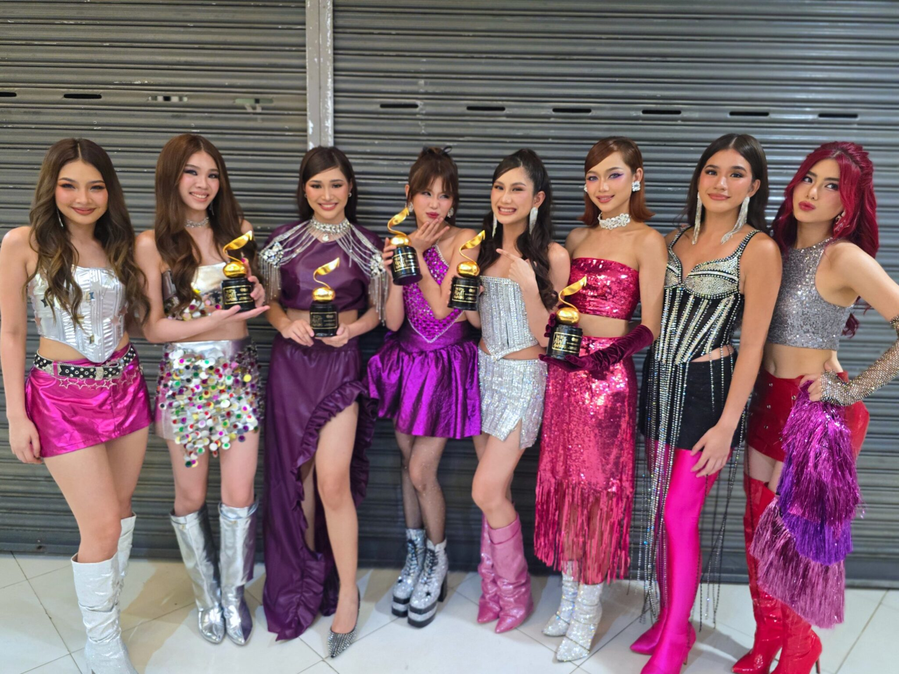
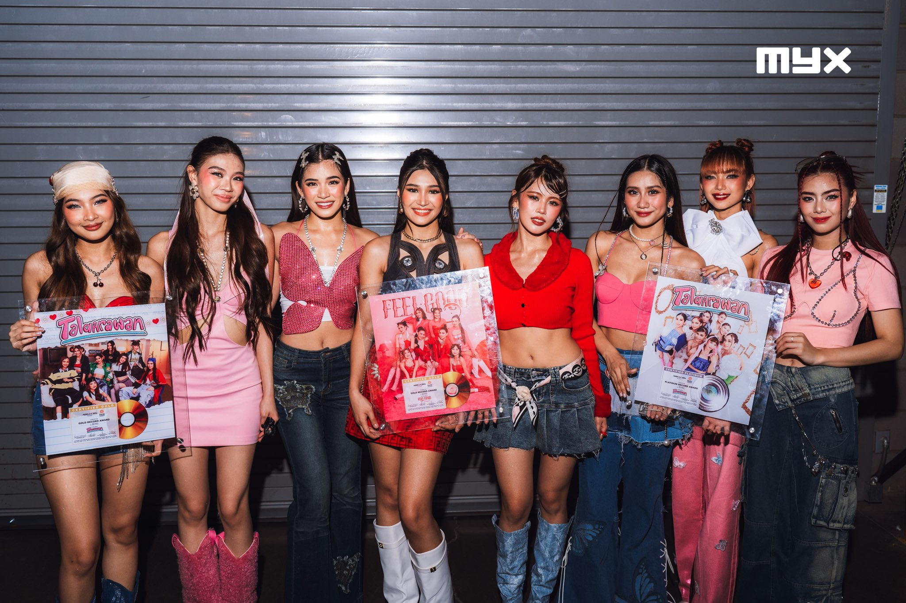
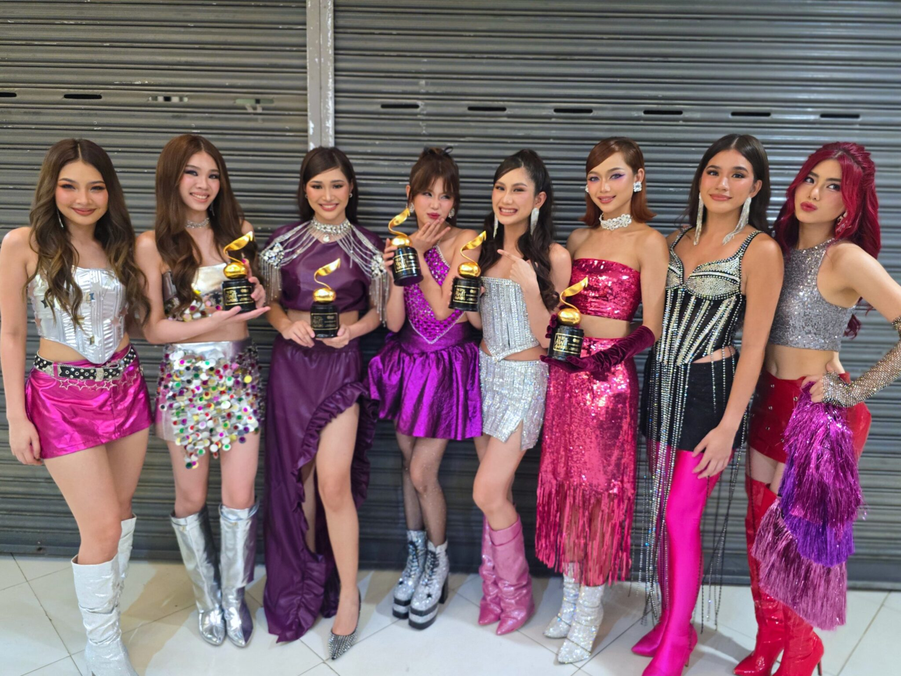
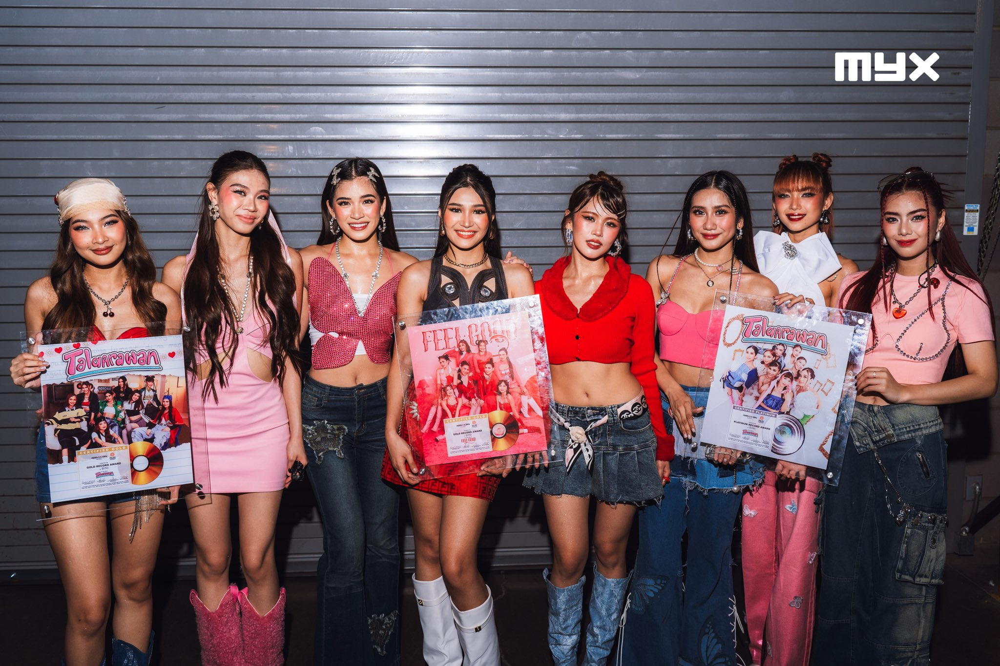

Concert and touring milestones
The group made history in 2024 with their Biniverse concert series, achieving sell-out performances across multiple dates at the New Frontier Theater and subsequently at the Araneta Coliseum—an unprecedented accomplishment for a Filipino girl group.
Bini made history as the first Filipino act to sell out the 55,000-seat Philippine Arena during their Valentine's Day performance in February 2025, marking the launch of their Biniverse World Tour.The group made history in 2024 with their Biniverse concert series, achieving sell-out performances across multiple dates at the New Frontier Theater and subsequently at the Araneta Coliseum—an unprecedented accomplishment for a Filipino girl group. The success of these concerts not only showcased their rapidly growing fanbase but also solidified their status as one of the country’s top live performers.
BINI continued to break records in 2025 when they became the first Filipino act to sell out the 55,000-seat Philippine Arena during their special Valentine’s Day performance, marking the grand launch of their Biniverse World Tour. This monumental event highlighted their evolution from rising P-pop stars to internationally recognized performers.
Following the Philippine Arena concert, the group brought their tour to key cities across Asia, the Middle East, and North America, performing in major venues and attracting diverse audiences. Their shows were praised for their high-energy choreography, powerful vocals, and immersive production, further cementing BINI’s reputation as global ambassadors of P-pop.
 


